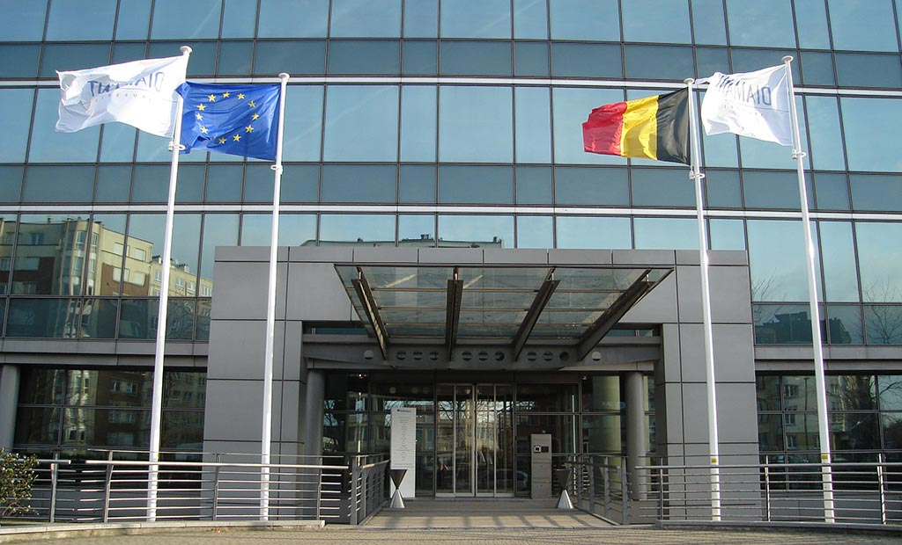

Venue
BluePoint Brussels
80 Bd. A. Reyers
1030 Brussels
Email: infobrussels@bluepoint.be
Telephone: +32 (0)2 706 88 00
Website: https://www.bluepoint.be/en/brussels/
Where can I park my car?
BluePoint Brussels has a underground car park with 150 spaces distributed on 2 floors. You will receive a ticket at the entrance of the car park that must be validated before your departure.
